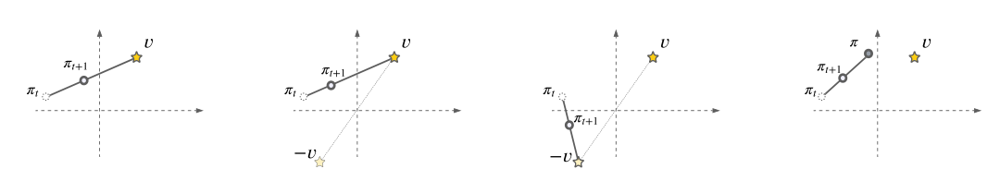

Towards Psychologically-Grounded Dynamic Preference Models (面向心理学接地的动态偏好模型)
- 会议/期刊: RecSys 2022 (Sixteenth ACM Conference on Recommender Systems)
- 作者与机构: Mihaela Curmei (UC Berkeley), Andreas Haupt (MIT), Dylan Hadfield-Menell (MIT), Benjamin Recht (UC Berkeley)
- 推荐链路定位: 召回（用户/物品表征的动态演化侧）——本文不提出新召回器，而是为"推荐→偏好改变→再推荐"闭环提供可仿真的用户模型
- 研究方向: 序列与会话推荐 / 强化学习与动态探索推荐
- 论文原文: https://arxiv.org/abs/2208.01534v2
- 开源代码: 暂未开源（作者称复现仿真代码置于论文补充材料）
TL;DR (1分钟核心速览)
现有动态偏好模型（极化/极端化理论）常假设偏好可无界放大，缺乏心理学证据且预测不具可实现性。本文提出"陈述效应→数学形式化→仿真导出可检验预测→数据校验→修正"的五步方法论，并把单纯曝光 (ME)、操作性条件作用 (OC)、享乐适应 (HA) 统一写成偏好向量的增量算子 \(\pi_{t+1}-\pi_t=\gamma f(\cdot)\)。在\(d\in\{2,8\}\)、\(N\in\{1000,5000\}\) 的闭环仿真中证明：三者产生定性可区分的轨迹（收敛/振荡/回归基线），且 ME 下"持续性 softmax"可同时在参与度与消费熵上严格优于静态最优 softmax，说明常用指标无法度量动态用户下的系统健康。
Background & Motivation (背景与核心矛盾)
- 主流范式: 离线 train-test 划分 + 静态偏好假设（矩阵分解/序列模型均把用户表征视为缓变或不变），以参与度（评分）与熵（多样性）作为设计目标。
- 前人局限 1: 闭环理论模型（如文献[33]的曝光放大模型、[35]的条件作用式模型）数学上推出偏好范数发散、用户极端化；但实证审计发现真实系统的推荐内容反而比自然消费更多样，未观测到强极化。
- 前人局限 2: 现有动态模型多为"纯数学描述"（如指数滑动平均 \(u_{t+1}=(1-\gamma)u_t+\gamma v_t\)），未说明对应哪一种心理机制，因而无法判断参数取值范围是否合理、也无法跨域迁移。
- 核心洞察 (Key Insight): 心理学实验已给出可量化的效应强度（如每增加一次曝光，7 分制吸引力评分 +0.2；100 分制下 3 天内对贴纸的满意度 −4.5），这些量级可直接约束偏好更新算子的步长 \(\gamma\)，从而使模型有界且可检验。
- 本文切入点: 把"心理学效应"当作模型设计的第一性约束，用仿真先筛掉不可信的算子形式，再交给线上数据检验。
Method (核心方法设计)
1. 整体框架 (Overall Architecture)
设物品向量 \(v\in\mathbb{R}^d\)固定、单用户偏好\(\pi_t\in\mathbb{R}^d\)，评分\(r(\pi_t,v)=\langle\pi_t,v\rangle+\varepsilon_t\)。推荐器维护偏好估计\(u_t\)（非真实\(\pi_t\)），按 softmax 温度\(\beta\)采样物品，用户返回带噪评分后真实偏好按所选的心理学算子\(f\)更新，估计器再用在线梯度下降 (OGD) 追上。整条闭环用于观察"真实偏好轨迹"与"估计得分轨迹"的长期形态，并据此导出可证伪的预测。核心结论是：只要各效应权重满足\(\gamma_{ME}+\gamma_{OC}+\gamma_{HA}\le 1\)，偏好范数对任意推荐序列有界（命题 4.1），从根上排除了前人模型的发散预测。
flowchart TD
A["固定物品向量 v_i ~ N(0,σI), 初始偏好 π_0"] --> B["偏好估计 u_t (OGD 更新)"]
B --> C["推荐策略: uniform / constant / greedy / softmax(β)"]
C --> D["用户评分 r_t = <π_t, v_t> + ε"]
D --> E["心理学算子 f: ME / OC / HA 更新 π_{t+1}"]
E --> B
E --> F["长期偏好分布 + 参与度/熵 诊断"]
2. 关键设计拆解 (Key Designs)
- 三效应统一增量算子族：痛点是前人算子无界、且效应之间不可比。本文统一为 \(\pi_{t+1}-\pi_t=\gamma f(\cdot)\)，其中 ME 为\(\gamma(v_t-\pi_t)\)（向被推荐内容按固定比例靠拢，与评分高低无关）；HA 为\(\gamma(\bar{\pi}-\pi_t)\)（向基线偏好线性回归，与推荐内容无关）；OC 见下条。三者取凸组合即得命题 4.1 的有界性，直觉是"所有算子都是向某个固定点的收缩映射"。
- 基于"惊喜度"的条件作用算子：痛点是 OC 只描述行为、不描述偏好，且正/负强化不应同权。定义惊喜 \(s=\arctan\!\big(\frac{\sum_{\tau=1}^{t-1}\delta^{\tau}r_{t-\tau}}{\sum_{\tau=1}^{t-1}\delta^{\tau}}-r_t\big)\)（指数折扣的历史期望 vs 当前评分的偏差，映射到\([-1,1]\)），更新为\(\pi_{t+1}-\pi_t=\gamma|s|\big(\mathrm{sgn}(s)\,v_t-\pi_t\big)\)。正向惊喜把偏好拉向\(v_t\)、负向拉向\(-v_t\)，位移幅度随惊讶程度缩放——这直接产生"参与度振荡"的可检验预测。
- 训练目标、估计器与推理开销：无监督损失，估计器为带 \(\ell_2\)的 OGD：\(u_{t+1}=(1-\alpha\eta)u_t+\alpha(r_{it}-s_{it})v_i\)；推荐分布\(P[i^*=i]\propto\exp(\beta s_{it}/\|u_t\|)\)（除以\(\|u_t\|\)以保持相邻轮期望参与度恒定，是本文关键的公平比较技巧）。每轮仅需\(O(Nd)\) 打分与一次向量更新，成本与标准 MF 在线服务同阶；无需负采样。
Experimental Setup & Evaluation Protocol (实验设置与评估协议)
- 说明: 本文为纯仿真研究，不含真实数据集、不含离线 ranking 基准，故无 Full-Ranking / 采样排序协议与 5-core 过滤。下表为仿真配置统计。
| 仿真配置 | 维度 \(d\) | 物品数\(N\) | 轮数\(T\) | 关键参数 | 说明 |
|---|---|---|---|---|---|
| 低维轨迹可视化 | 2 | 1000 | 数千 | \(\gamma_{ME/OC}=0.1\),\(\gamma_{HA}=0.01\) | 画偏好轨迹与长期分布云 |
| 高维统计诊断 | 8 | 5000 | 5000–10000 | \(\beta\in\{1,2,3,4,5\}\) | 参与度/范数/熵曲线 |
| 估计噪声 | — | — | — | \(\varepsilon,\varepsilon'\sim\mathcal{N}(0,\sigma' I)\) | 加噪以避免不稳定平衡点 |
- 划分与防穿越: 无数据集划分；改用"oracle 模型 vs 估计模型"双轨对照（附录 B 给出直接访问真实 \(\pi_t\) 的 oracle 版本），以证明观察到的动态源于行为算子而非估计误差。
- 评测协议: 无 ranking 指标；评测对象为轨迹形态（收敛点、振荡周期/幅度）与系统级指标（平均评分=参与度、消费分布熵=多样性），以及二者的帕累托前沿。
- 对比策略与超参: 基线为 uniform / constant / greedy 三种选择规则，主对比为 softmax(\(\beta\)) 温度族；物品与初始偏好均采\(\mathcal{N}(0,\sigma I_d)\)，\(\delta\in\{0.99,0.999\}\)。
Key Experimental Results (实验关键数据)
1. 主实验对比 (Main Results)
原文未给出数值型主实验表，仅以图 3–8 呈现定性/半定量趋势；下表如实汇总各算子在不同推荐策略下的可区分签名（↑/↓ 表示随 \(\beta\)或\(\gamma\) 增大而增/减）。
| 心理学算子 | uniform | constant / greedy | softmax(β↑) | 偏好范数 \(\|\pi\|\) | 参与度 | 消费熵 |
|---|---|---|---|---|---|---|
| ME (单纯曝光) | 收敛到原点附近的球 | 收敛到被反复推荐的物品 | 偏好绕物品空间"转圈"，\(\beta\)小则转得快 | ↑ | ↑（\(\gamma_{ME}\)放大） | 高位保持（\(\beta=4\) 仍高） |
| OC (条件作用) | 近似随机 | 振荡（周期/幅度随 \(\beta\)、\(\delta\)变） | \(\beta\) 越大振幅越大、周期越短 | 振荡 | 振荡 | 振荡 |
| HA (享乐适应) | 收敛到基线 \(\bar{\pi}\) | 收敛到基线\(\bar{\pi}\) | 偏置但不压过 ME/OC | → 基线 | → 基线 | — |
| ME + HA | — | — | 轨迹在物品空间"走得更少" | 收缩 | 略降 | 降 |
| OC + HA | — | — | 振荡被限制在基线方向附近 | 振荡+偏置 | 振荡 | — |
2. 消融实验 (Ablation Study)
| 消融项 | 变化 | 观测结果 |
|---|---|---|
| \(\gamma_{ME}=0\)（静态偏好） | 静态 vs 动态 | softmax 处于"参与度–熵"帕累托最优（定理 6.4） |
| \(\gamma_{ME}=0.1\) | 动态偏好 | 持续性 softmax（式 2）在两项指标上同时优于所有 softmax(β) |
| \(\delta:0.99\to0.999\) | 近因偏差减弱 | OC 振荡频率下降、周期变长（图 6） |
| \(\gamma_{OC}=0.01\to0.1\) | 强化强度增大 | 振荡幅度显著增大，\(\delta\) 对周期的影响被放大 |
| oracle vs OGD 估计 | 去除估计误差 | 定性结论不变，动态由行为算子主导 |
3. 关键实验发现 (Key Findings)
- ME 会把"高参与度"变成廉价指标：图 4(a) 显示 \(\beta=5\)且\(\gamma_{ME}=0.5\)时参与度最高，但图 4(c) 显示即使\(\beta=4\)，消费内容熵仍可维持高位——即系统可通过不断把用户偏好"推着走"同时刷高参与度与多样性，二者都不再代表用户福利。
- OC 天然产生"先上瘾后厌倦"的振荡：greedy 策略下，偏好被正向惊喜推高→历史期望追平→噪声触发负向惊喜→偏好被拉向 \(-v_t\)而崩塌至\(\pi_t\approx 0\)，随后期望衰减、另一方向重新获得正向惊喜。该振荡在心理学文献中未见报道，作者据此承认形式化可能过强（负强化效应被高估、\(\delta\) 需下调）。
- 指标失效可被"反向利用"：式 (2) 的持续性 softmax 只推荐落在最近一次偏好移动方向半空间内的内容（\(\mathbb{1}_{\langle\hat u_t-\hat u_{t-1},v\rangle>0}\)），刻意改变偏好以提升消费熵，却在图 8(b) 中严格占优静态最优 softmax 的帕累托前沿——证明"参与度+多样性"双高并不等于系统健康。
Highlights & Limitations (亮点、对比与审稿批判)
- 与代表作对比 (vs. Prior Work): 相较 [33]（曝光放大导致偏好无界）与 [35]（偏好估计直接反写真实偏好、证明发散），本文的算子族以凸组合保证有界，并明确区分"估计 \(u_t\)"与"真实\(\pi_t\)"，因果方向更干净；相较 DPF 类高斯随机游走模型，本文把漂移项换成有心理学证据支撑的定向算子，可解释性与可检验性更强。
- 可迁移亮点: (1) softmax 里用 \(\beta/\|u_t\|\) 归一化温度，使不同偏好范数下的探索强度可比，可直接用于 bandit 探索的公平对照；(2) "先仿真导出可证伪签名（振荡 vs 恒定），再用线上日志判别"的验证范式，可迁移到 LLM 对话推荐中的偏好漂移检测。
- 审稿级局限批判: (1) 零真实数据验证——所有结论来自合成高斯物品向量，作者自己承认未做部署系统检验，\(\gamma\)的可辨识性、物品因子与偏好动态的耦合估计完全未解决；(2) 物品向量固定、单用户、\(d\le 8\)、\(N\le 5000\)，且不区分"曝光"与"消费"，与工业级千万级候选、多用户竞争的闭环相去甚远；对"指标失效"的论证仅一个构造性反例，缺少对常见离线指标（NDCG/Recall）的正式分析。
Rating (四维评分)
- 方法创新性 (Novelty): ⭐⭐⭐⭐ （把心理实验量级作为偏好算子的先验约束，并用有界性命题排除前人的发散结论，视角新颖但算子形式本身较简洁）
- 评估协议与实验扎实度 (Protocol & Experiments): ⭐⭐ （纯仿真、无真实数据集与统计显著性检验，仅有定性趋势与 oracle 对照，实验强度远低于常规 RecSys 论文）
- 写作与数学规范度 (Clarity & Rigor): ⭐⭐⭐⭐ （三效应形式化统一、命题 4.1 与定理 6.4 表述干净，图示与轨迹可视化直观；OC 的惊喜项参数化略随意）
- 工业落地与复现价值 (Industrial & Practical Value): ⭐⭐ （无开源仓库，无法直接上线；但提供了评估"参与度/多样性"指标是否被动态偏好污染的诊断框架，对长期生态指标设计有启发）